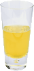

Elixires Especiais da Semana

Brisa De Limão
A última bebida saudável, este elixir combina ervas botânicas, minerais e vitaminas com um toque de limão em uma maravilha cítrica suave que vai manter seu sistema imunológico funcionando o dia todo e a noite toda.

Chiller Chai
Não é o seu tradicional chai, este elixir mistura mate com especiarias chai e adiciona um chute de chocolate extra para uma sensação de sabor com cafeína no gelo.

Cerveja Cerebral Negra
Quer aumentar sua memória? Experimente o nosso elixir Black Brain Brew, feito com chá preto oolong e apenas um toque de café expresso. Seu cérebro vai agradecer pelo impulso.
Junte-se a nós em qualquer noite para estes e todos os nossos outros maravilhosos elixires .
Bem vindo ao Bar Use a Cabeça!
O Head First Lounge é, sem dúvida, o maior criador de tendências em Webville. Pare para experimentar a eclética oferta de elixires, chás e cafés, ou fique um pouco mais e aproveite o cardápio multicultural que combina harmonia de sabor, textura e cor com os melhores ingredientes frescos e saudáveis.
Durante a sua estadia no lounge, você desfrutará de uma mistura harmoniosa de sons ambientais e místicos, enchendo o salão e acrescentando uma dimensão extra à sua experiência de jantar. A decoração envolve-o com os sentimentos relaxantes de vistas do passado. E, não se esqueça, o lounge oferece acesso sem fio gratuito à Internet, então traga seu laptop.
Nossa garantia: no lounge, temos o compromisso de fornecer a você, nosso convidado, uma experiência excepcional a cada visita. Se você está apenas parando para checar em um e-mail sobre um elixir, ou está aqui para um jantar fora do comum, você encontrará a nossa equipe de atendimento experiente prestar atenção a cada detalhe. Se você não estiver totalmente satisfeito, tenha um Blueberry Bliss Elixir conosco.
Mas isso não é tudo; à noite, junte-se a nós no salão dos fundos enquanto o nosso DJ residente toca uma seleção de trance e drum & bass em toda a nossa pista de dança com tema de tiki. Ou simplesmente passear em um dos nossos confortáveis estandes de vinil branco no bar de dança. Você pode ter seus elixires entregues desde a sala principal até a pista de dança. Se você já teve o suficiente da batida, basta voltar para a área do salão para relaxar. E, não importa onde você se encontre no lounge, você sempre estará conectado ao nosso acesso à Internet sem fio.
Agora que você já experimentou o salão virtualmente , não é hora de nos ver de verdade ? Estamos localizados bem no coração de Webville e criamos algumas instruções detalhadas para que você chegue aqui em tempo recorde. Nenhuma reserva necessária; venha e junte-se a nós a qualquer momento.
O que está jogando no salão
Frequentemente nos perguntam sobre a música que tocamos no lounge, e não é de admirar, é ótimo. Só para você, mantemos uma lista aqui no site, atualizada semanalmente. Apreciar.
- Bar de Buda, Claude Challe
- Quando cai,zero 7
- Terra 7,LTJ Bukem
- Le Roi Est Mort,Vivo Le Roi !, Enigma
- Música para Aeroportos, Brian Eno
© 2012, Bar Use a Cabeça
Todas as marcas comerciais e registradas que aparecem neste site são de propriedade de seus respectivos donos.